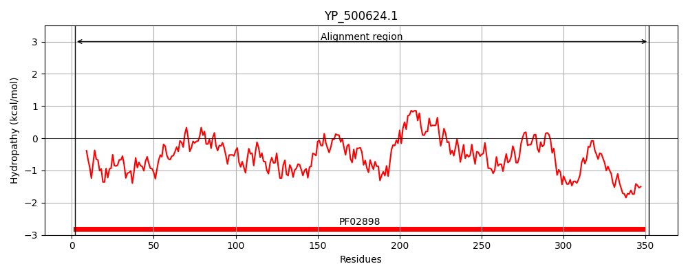
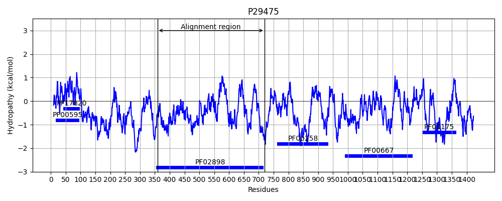
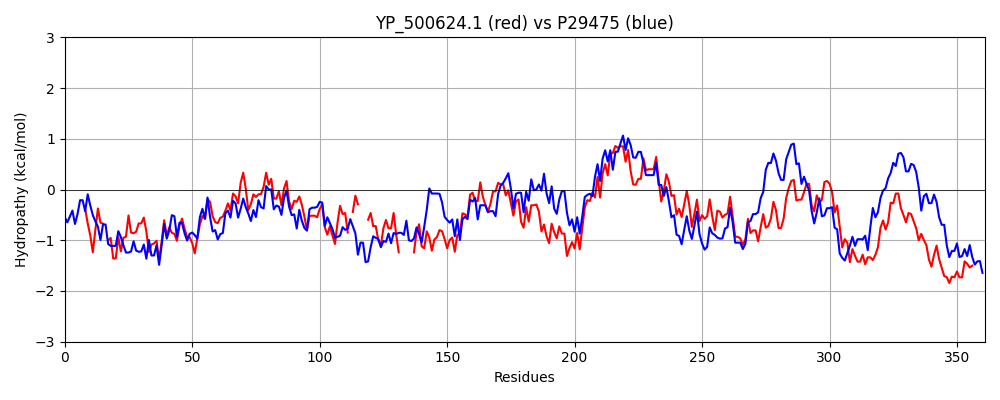

Hit Accession: P29475
Hit TCID: 8.A.24.2.4
Hit Description: gnl|BL_ORD_ID|9668 gnl|TC-DB|P29475|8.A.24.2.4 Nitric oxide synthase, brain OS=Homo sapiens OX=9606 GN=NOS1 PE=1 SV=2
Mach Len: 361
e:0.000000
Query TMS Count : 0
Hit TMS Count: 0
TMS-Overlap Score: 0.000000
Predicted Substrates:None
BLAST Alignment:
Score: 703 , Bit scores: 275 bits, E-value: 2.8e-83, Alignment length: 361, Percentage identity: 41
Query: 2 LFKEAQAFIENMYKEC-HYETQIINKRLHDIELEIKETGTYTHTEEELIYGAKMAWRNSNRCIGRLFWDSLNVIDARDVTDEASFLSSITYHITQATNEGKLKPYITIYAPK-DGP---KIFNNQLIRYAGY-----DNCGDPAEKEVTRLANHLGWKGKGTNFDVLPLIYQLPNESVKFYEYPTSLIKEVPIEHNHYPKLRKLNLKWYAVPIISNMDLKIGGIVYPTAPFNGWYMVTEIGVRNFIDDYRYNLLEKVADAFEFDTLKNNSFNKDRALVELNYAVYHSFKKEGVSIVDHLTAAKQFELFERNEAQQGRQVTGKWSWLAPPLSPTLTSNYHHGYDNTVKDPNFFYKKKESNAN 352
LF A+ FI+ Y + ++ +RL ++ EI T TY + ELIYGAK AWRN++RC+GR+ W L V DARD T + I H+ ATN+G L+ ITI+ + DG +++N+QLIRYAGY GDPA + T + GWK FDVLPL+ Q + ++ P L+ EVPI H + + L LKWY +P +SNM L+IGG+ + PF+GWYM TEIGVR++ D+ RYN+LE+VA D K +S KD+ALVE+N AV +SF+ + V+IVDH +A + F NE + W W+ PP+S ++T +H N P+F Y+ N +
Sbjct: 359 LFPLAKEFIDQYYSSIKRFGSKAHMERLEEVNKEIDTTSTYQLKDTELIYGAKHAWRNASRCVGRIQWSKLQVFDARDCTTAHGMFNYICNHVKYATNKGNLRSAITIFPQRTDGKHDFRVWNSQLIRYAGYKQPDGSTLGDPANVQFTEICIQQGWKPPRGRFDVLPLLLQANGNDPELFQIPPELVLEVPIRHPKFEWFKDLGLKWYGLPAVSNMLLEIGGLEFSACPFSGWYMGTEIGVRDYCDNSRYNILEEVAKKMNLDMRKTSSLWKDQALVEINIAVLYSFQSDKVTIVDHHSATESFIKHMENEYRCRGGCPADWVWIVPPMSGSITPVFHQEMLNYRLTPSFEYQPDPWNTH 719 | Protein Hydropathy Plots: |
|---|
|  |  |
Pairwise Alignment-Hydropathy Plot:
|
|---|
|  |